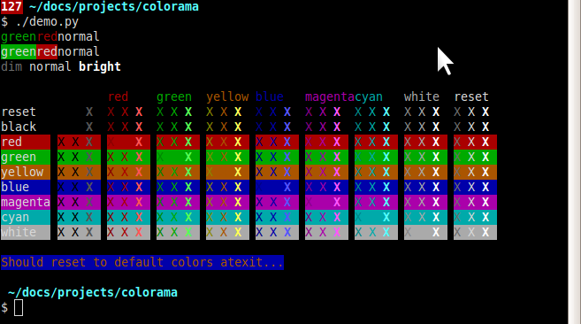
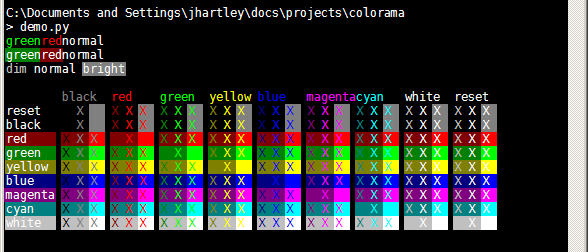

colorama: Simple cross-platform Python API for colored terminal text
Announcing new Python package, Colorama.
ANSI escape character sequences have long been used to produce colored terminal text on Unix and Macs. Colorama makes this work on Windows, too. It also provides some shortcuts to help generate these ANSI sequences, and works fine in conjunction with any other ANSI sequence generation library, such as Termcolor (http://pypi.python.org/pypi/termcolor.)
This has the upshot of providing a simple cross-platform API for
printing colored terminal text from Python, and has the happy
side-effect that existing applications or libraries which use ANSI
sequences to produce colored output on Linux or Macs can now also work
on Windows, simply by calling colorama.init().
I realise that printing colored terminal text is verging on pathalogically superficial, but it has long irked me that this didn't just work. Python should make this easy.
My mapping of ANSI conventions to the equivalent Win32 calls is far from perfect. Currently it has the following results. ANSI codes under Ubuntu on gnome-terminal:

and the exact same ANSI codes printed on Windows under Colorama:

Update: I previously wrote here about discrepancies between the two, which have since been fixed. The only outstanding issue is that colorama does not support 'dim' text on Windows - it looks just the same as 'normal' text, and as far as I know, will never be able to.